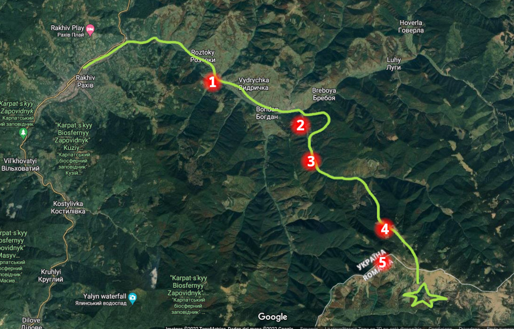
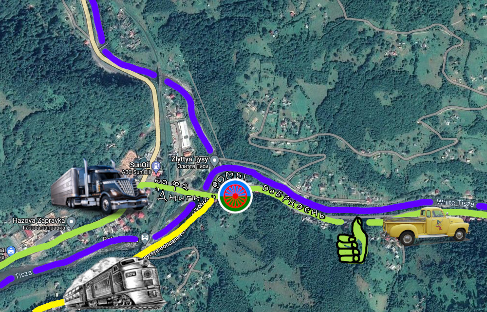
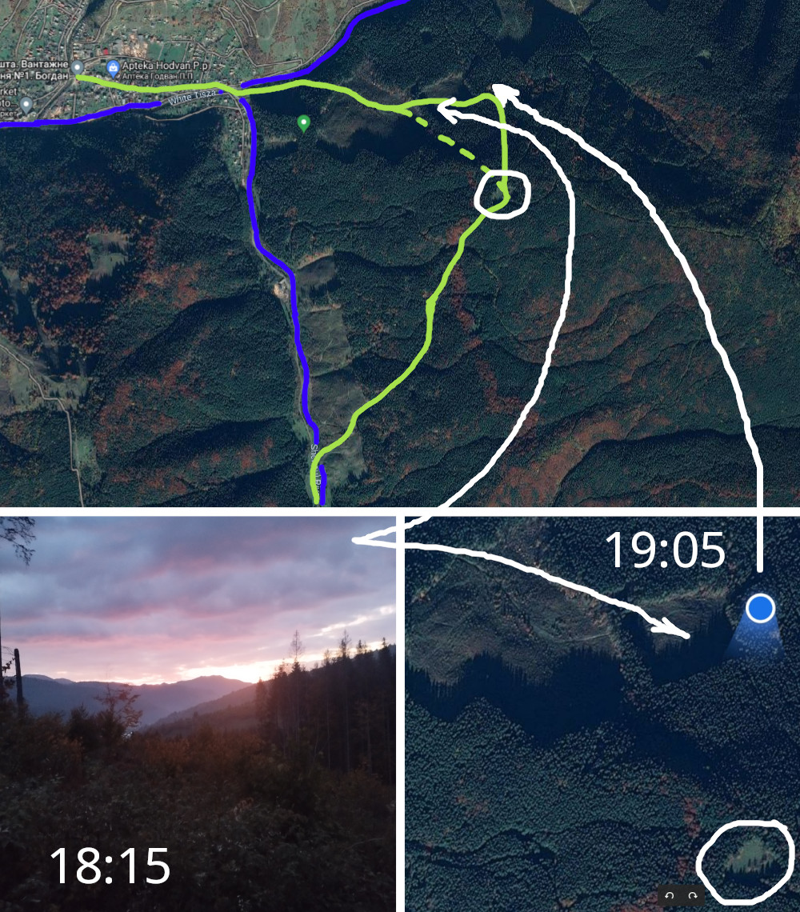
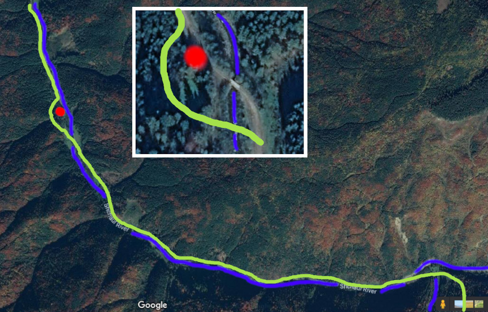
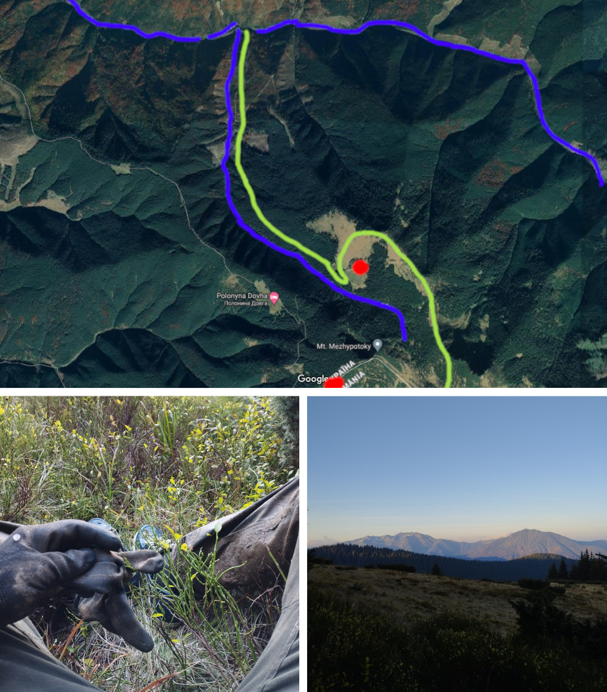
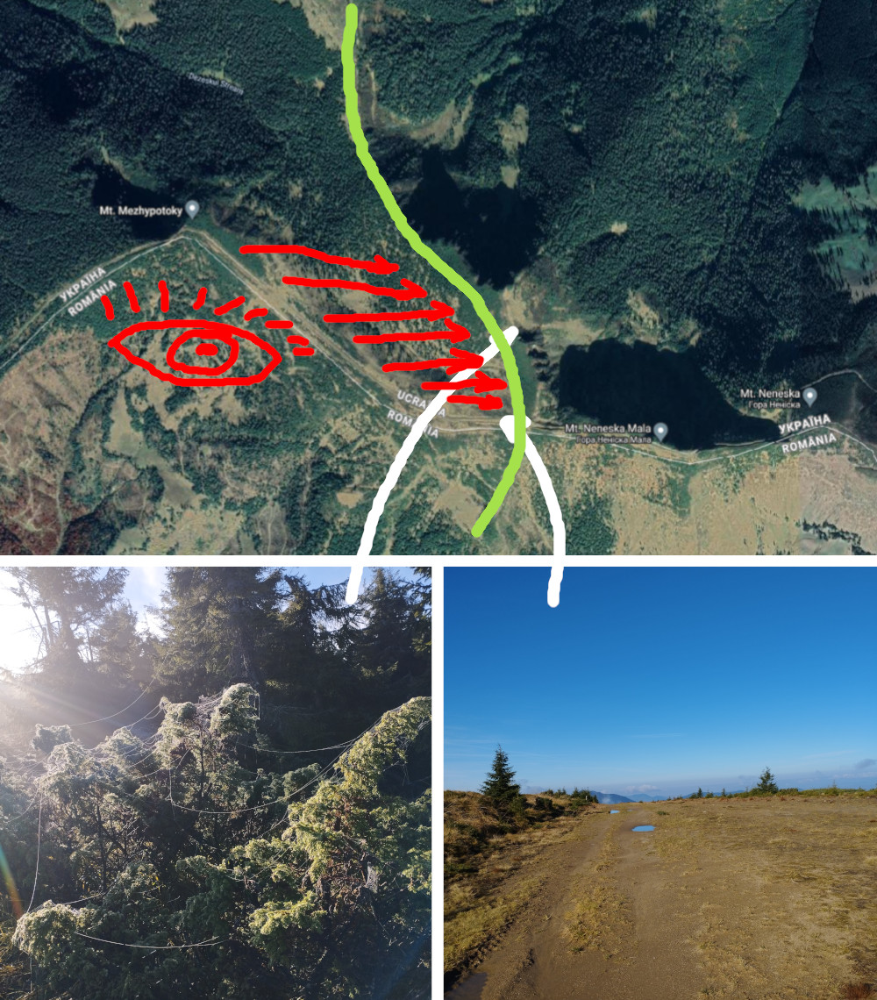
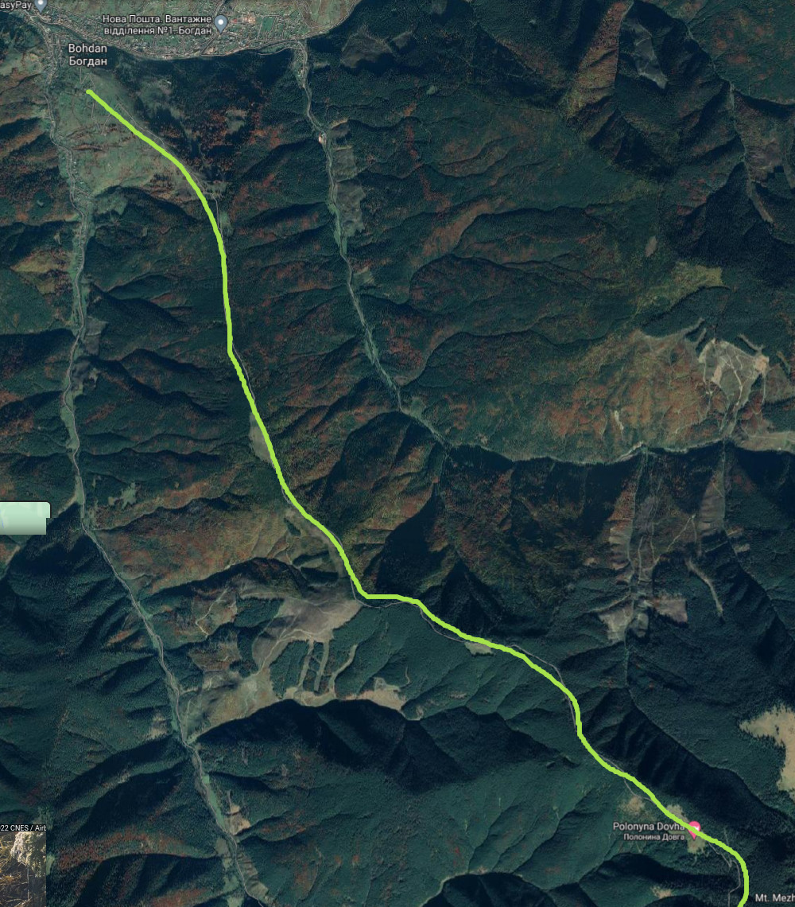

Привет, ниже ты найдёшь подробное описание маршрута которым я выбрался из Украины в Румынию. Маршрут сросся по ходу пьесы, я шёл наугад, всмысле не просчитывал дальше чем на пару шагов. Выбрал это место для перехода изходя из двух моментов:
- несколько недель наблюдал за соцсетями погранцов, как оказалось, они очень любят рассказывать о своих успехах на поприще отлова ухылянтов и постят видосы/фотки задержанных ребят поставленных на колени, а по бокам солдатики. В сюжетах рассказывалось не только какой именно отряд проивёл задержание, что позволяет высчитать где границу стерегут чаще, но и конкретные места где ловят людей. Так что я решил идти по зоне ответственности раховских, потому как они по сравнению с мукачевскими выглядели как бомжи и не имели при себе собак
- как я убедился впоследствии проезжая територию заповедника вдоль Тисы, у погранцов чет с егерями, посты погранцов стоят на въездах в заповедник, например, там где трасса идёт по территории заповедника. Но на территории заповедника погранцов или солдатов я не видел. А там как раз восточный край заповедника перетекающий в обычный лес куда ещё нужно людей забросить и потом забрать, кому это надо когда пацаны в эту тису ныряют как форель вверх по руслу и только успевай их оформляй.
Шёл я в ночь перед полнолунием, без фонарика, при свете луны и звёзд. И тебе рекомендую поступить так же. Успеха. Я вышлю эту инструкцию 3м людям, каждого из вас я знаю лично и могу обменять контактами если решите идти вместе и т.д.
|
| Общее описание маршрута |
|  |
Финальный этап моей экспедиции начался в Рахове, а закончился на румынской стороне Мармаросских гор. На пути (по инфе от 08.10.2022) было 5 стрёмных мест которые тебе нужно обойти:
- 1. Блокпост по дороге от Рахова до Тисы
- нужно застопить местную тачку и на ней проехать
- 2. Жилые сторения и промка на р. Шаул
- обойти через соседнюю гору (+2 часа) или пойти на морозе
- 3. Теплушка (блокпост?) перед мостом на р. Шаул
- вовремя тормознуться и обойти по лесу
- 4. Обитаемое ранчо на полонине (с гавкающей собакой)
- свернуть "туда"
- 5. Пост погранцов на вершине
- надеяться что провтыкают
|
| "Рахов-Богдан" Tisa-->WhiteTisa |
|  |
На начало маршрута я вышел с правого берега Тисы, так как приехал в Рахов на фуре со стороны Мукачево и сошёл возле заправки Sun Oil. Затем через тунель под жд мимо джигитов у кафешки по мосту через Тису очутился, как мне показалось, в ромском районе всёещёРахова. Если в Рахов ты добрался на поезде — следовательно ты уже на левом берегу Тисы и пойдя вдоль русла на север выйдешь как раз на этот район в место где Белая Тиса сливается с просто Тисой. Той дорогой я прошёл еще 10-15мин. по пути подстопливая проезжающие тачки, вторая тачка тормознулась, в ней сидело пару пацыков только вернувшихся с передка домой. Они были на таком драйве и даже сказать, позитиве, хотя привезли с собой двухсотого. В тот момент моя легенда про ластецкий маршбросок перед возвращением во Львов вполне себе проканала и они без вопросов повезли меня до с. Богдан. По пути нам встретился блокпост на дороге с каким-то даже шлагбаумом и парой солдатиков (не запомнил точного места). Пацаны кивнули солдатам и не сбавляя скорости проехали дальше. Так я и добрался с ними до центра с. Богдан, решил не палить дальнейший маршрут и вышел там.
|
WhiteTisaDezeskul
| "Богдан" WhiteTisa-->Shaul |
|  |
Распрощавшись с бойцами возле магаза, прикупил с полкило спелых груш и почапал вдоль дороги к мосту через Белую Тису, где в неё впадает Шаул. Время близилось к закату, навстречу мне попалось пару местных жителей, видимо возвращавшихся со своих работ, их взгляды задерживались на мне, но не более. Вид я, надо сказать, имел загадочный и придурковатый, как мне казалось, пакет груш и бутылка воды в руках наводили на мысль что я где-то недалеко тут обретаюсь, по месту, хоть и весь такой с рюкзаком.
Разглядывая на картах и так и эдак левобережную часть с. Богдан я решил (на тот момент не ощущая по карте рельефа) обойти этот район горами-лесами и спуститься к реке Шаул уже за тем, что мне показалось лесопилкой. Желания попадаться на глаза местным на этом уже конкретно "палевном" участке не было совсем — чёт много раз слышал что они не брезгуют сообщать куда надо.
Поэтому перейдя по мосту Белую Тису я тут же скорой походкой перебрался мостиком через Шаул и пошёл вдоль нависшего безымянного склона прямо по уваленной грунтовке. В след мне пару раз вяло погавкала собака из ближайшего двора.
Несло на гору, тянуло в лес в надежде что там мне удастся скрыться, переждать, пойти себе, короче, да и все. Грунтовка круто пошла в гору, почувствовал что "встал на тропу". Преодолев подъём обнаружил себя на краю вырубленного участка леса.
Как я позже понял — последующие дороги никуда не вели, их накатали тягачи которые вывозили попилянный лес, все эти дороги обрывались у верхней границы вырубки.
Первую развилку я проигнорил, а на второй всё же свернул после того как меня едва не застал в расплох эндуро, промчавшийся по дороге к (как потом оказалось) какому-то лагерю с вагончиками и освещением. Пересидев в придорожных кустах ежевики несколько минут я всё же сменил дорогу на ту что шла вверх к началу леса, сделал фотку закатную там. Оставшиеся метров 50 до леса пришлось пробираться через пару оврагов заваленных стволами и ветками, эт жесть: треск и ноги проваливаются куда-то в глубину. Зашел в лес уже в темноте. Странно геолокацию отображает, у меня тут два предположения:
- геолоку просто заглючило
- вот того перешейка между вырубками уже не было и я просто шел себе и шел влево и вверх.
Я хз, возможно и слишком далеко забрался, уже пробираясь меж дерев и изредка поглядывая на геолокацию понял что ваще не шарю где тут что и вариант один — ломиться на полонину и от туда уже как-то спускаться к реке.
Луна просвечивала скудно, пару раз натыкался на ветки, приходилось перешагивать через упавшие стволы коих было предостаточно. Постепенно градус наклона дошёл уже до 60+ по ощущениям, я прямо карабкался помогая себе руками, очень удачно под руку мне подвернулась вполне себе хваткая коряга размером с короткий посох, с ней я дойду до кордона и скину уже внизу на румынской стороне.
Выбрался на полонину и встретился с луной, стало как-то полегче, отдышался, перекусил и погрёб взяв прицел на лысую часть склона уже за крайним объектом там где проглядывали дороги. Выбирался по складке в склоне промытой ручьём, сначала по мягкому вроде, а дальше стало как-то очень обрывисто и мокро, в результате опять вышел в районе вырубки и неистово задолбался пока выбрался на дорогу вниз, это жоще чем лес, просто рельефа нет, всё в пнях, валежнике и ежевике, ноги соскальзывают и проваливаются. Дальше вышел на грунтовку вниз и по ней уже спустился к р. Шаул где понял что дорога по которой надо дальше идти — по ту сторону реки. Прошёлся вдоль русла и нашёл чёт типа брода там где идёт уже пастбище в ограде, через него вышел на дорогу вдоль реки и пошёл при свете луны прямо. Датировка темной фотки с луной что сделал на той дороге 22:48, это не меньше 3х часов на обход бабилона горами ушёл!
|
| "Пост у моста" Shaul-->Dezeskul |
|  |
Где-то минут с 20 я шёл по шикарно освещённой луной дороге вдоль реки, по пути тянулись огороженные пастбища с хозпостройками, нигде ни души, царящая атмосфера расслабила меня, я потерял бдительность и хотя глаза мои уже насторожились разглядывая впереди странный силуэт — ноги мои продолжали идти пока я в 20 метрах от себя не различил таки угловатый силуэт вагончика и фигуру с сигаретой что стояла на входе — с моей стороны! До сих пор не знаю как он меня не развидел, я шёл прямо по дороге освещённый луной. Тем не менее, приготовившись с тому что сейчас меня "повяжут" я сел на обочину и выждав несколько минут плавно съехал в овраг где скинул ещё часть вещей из рюкзака, сменил носки в ожидании пока пассажиры из вагончика запакуются (их было вроде как двое и сигналом к продолжению пути для меня послужил хлопок двери и приглушенный голос новостной передачи).
Я выполз из оврага на сторону леса и обошёл потихоньку этот стремный вагончик с запасом дальности, вышел на очередном пастбище и перебрался в конце него через реку на дорогу, уже далеко за мостом.
Остаток пути вдоль р. Шаул прошёл в бодром темпе, особо не рассчитывая никого встретить, пару раз настремала брошенная строительная техника, пейзаж в лунном освещении всё больше походил на инопланетный...
Перейдя по следующему мосту через Шаул я пересёк в брод ручей и мимо
овчарни от которой, кстати, несло говнецом, начал подыматься по удолбанной дороге в гору.
|
| "Выход на полонину" Dezeskul-->Polonyna |
|  |
С рюкзаком и всеми этими манёврами я начал подъём весьма уставшим и не фиксировал временных чекпоинтов, просто шел-шел-шел по этой огроменной дороге, никаких развилок на дороге не повстречал кроме одной: в какой-то момент дорога вышла на лысый склон и стала походить на заброшенную, в этот момент я развидел развилку и попёр вверх по склону, там было градусов 60-70, шел там где оставались очертания дороги и видно было что наверху чет разрыто, выбравшись на верх обнаружил площадку огороженную стволами деревьев, словно забором и от площадки начиналась более наезженная дорога по срытому склону, даже дреннажная канава между склоном и дорогой просматривалась, дальше ровно и спокойно шел по этой дороге встречая строительную технику пока не начался адок. Мне все казалось что я вот-вот выйду на полонину, но геометка моя ооооочень медленно двигалась, дорога вела меня вдоль склона с небольшим градусом подъема и не думала выводить на полонину, дальше началась жесть, все перерытые при прокладке дороги ручьи текли по дороге насыщая глинистую землю водой и превращая её в лютую сель засасывающую в себя, не желающую отпускать. Мне пришлось идти босиком царапя ступни об острые камни в глине, на мне был рюкзак большой и сил выбраться и идти выше дороги по лесу уже не оставалось, тупо шагал и ждал когда эта пытка кончится. Справа в обрыве все громче шумел ручей, в какой-то момент дорога сровнялась с ним по высоте и пересеклась с той что соединяет полонины. Я свернул налево и в скудном предрассветном освещении выгреб на полонину. Здесь я конкретно зафейлил ибо поперся по дороге строго вверх прямо там где домики, думал что они так же как и везде — брошенные, вдруг в нос мне ударил запах коровьего дерьма и послышался звонк колокольчика, а вслед за ним и лай собаки. В итоге пришлось резко возвращаться до развилки и уходить вбок по дороге пересекавшей полонину. Укрывшись в лесу на той стороне я продолжал слышать собачий лай, мысленно готовился к тому что погранцы уже ждут меня, ведь и пастух должен был меня видеть, до КПП недалеко, с чего еще собака будет гавкать перед рассветом. Короче стал пробираться по лесу вдоль полонины, обнаружил кучу троп и мусора от черничников. Собака замолчала. Убедившись что склон скрывает меня от обзора с соседней вершины и домиков вышел к дороге и погрёб по ней. К этому моменту расцвело и меня даже чутка пригрело солнце, пофоткал Говерлу, полонину и долину.
|
| "C полонины на границу" Polonyna-->Border |
|  |
В процессе подъема я не раз возвращался к мысли что там, наверху, у самой границы я могу банально нарваться на пост или патруль погранцов и всё моё путешествие потеряет смысл, выйдя с полонины по дороге я обнаружил себя хребте, мой маршрут отлично просматривался с соседней вершины где как раз и должен был располагаться пост погранцов. Солнце уже светило вовсю и тут началось чудо чудное — ближе к рассвету все ущелье р. Шаул накрыло туманом, так вот весь этот туман начало вытягивать навстречу взошедшему солнцу и потянуло прямо на соседнюю вершину и на мою и в результате на кордон я выходил в тумане, перешел широченную дорогу и начал спускаться с румынской стороны, брал все время правее, в результате выбрался на старую дорогу и по ней спускался пока она не оборвалась упёршись в ручей, дальше уже спускался по ручью, странно, но соседний склон весь изрезанный дорогами был какой-то странный, может через листву не различил где там по нему идут дороги да такие чтобы спускались вниз. спустился по ручью (шагая то по берегу то по воде) до самой реки и пошел вдоль нее по дороге, так и выбрался ближе к цивилизации где меня подобрали лесорубы и вывезли прямо к REPEDEA оказалось это приграничный заповедник где разрешается пилить иногда лес на нужды местных и так же от туда постоянно выбираются ухылянты иногда группами по 5-6 человек, видимо, есть тема выйти через полонину Долгую, о ней щас поговорим.
|
| "Полонина Долгая" Polonyna Dovga |
|  |
Этот маршрут меня изначально застремал, так как выглядел слишком натоптанным, дом отдыха на полонине, дорога туристическая, предполагаю что там должны быть посты. Но всё же, возможно, щас с наступлением холодов там можно пройти, не знаю... Так-то звучит очень круто: плавный набор высоты и выход на кордон без всяких селей, мелей и бродов. Можно выйти на кордон за несколько часов. Правда, мне в какой-то момент карта показывала "КПП ПОГРАНИЧНИКОВ" на вершине, тем более что подыматься от с.Богдан придётся по лысому склону. Если бы была инфа что опасно именно выгребать в том месте на кордон, то предложил бы пройдя полонину Долгую свернуть налево и выбраться на ту полонину по которой я шёл по дороге которая пересекает ручей Дрезескул
|